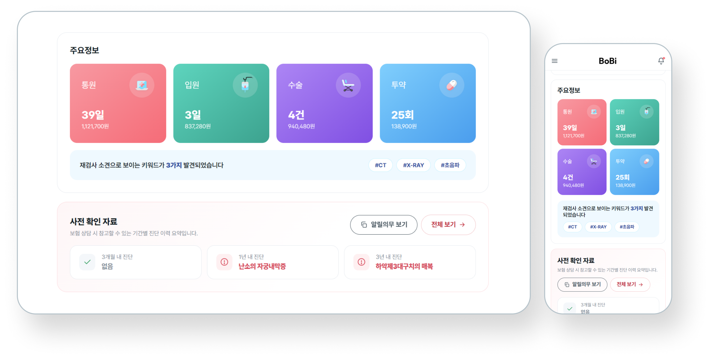
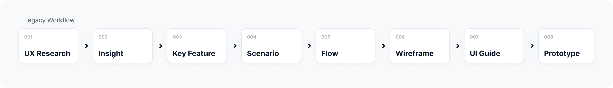
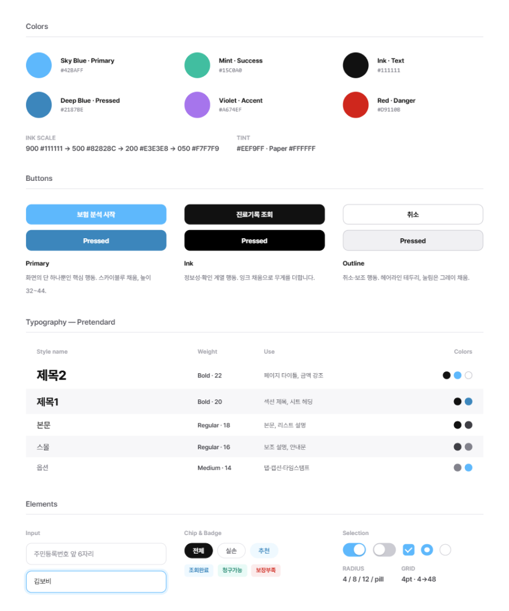
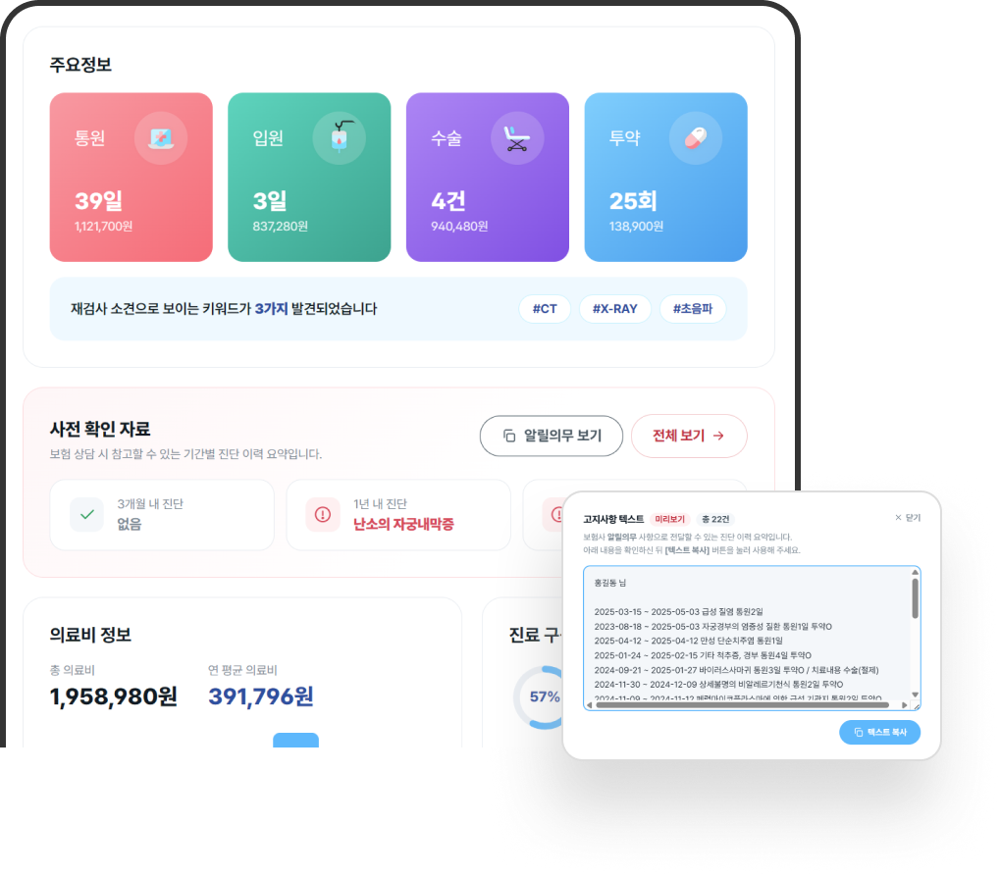
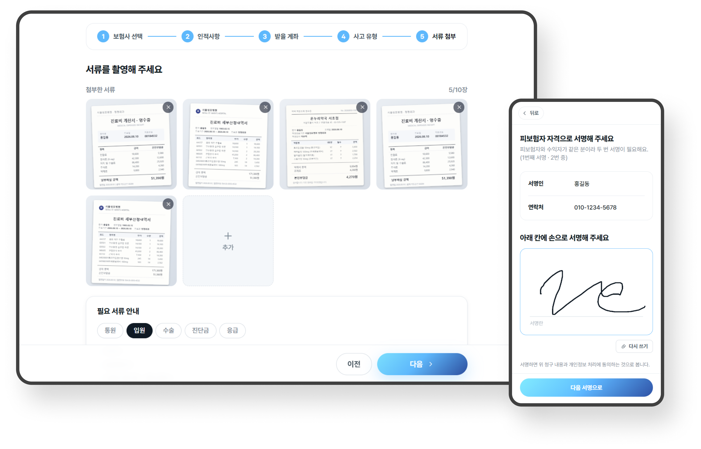
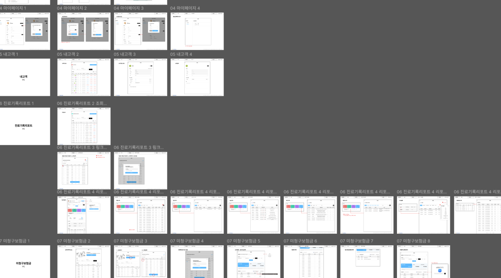
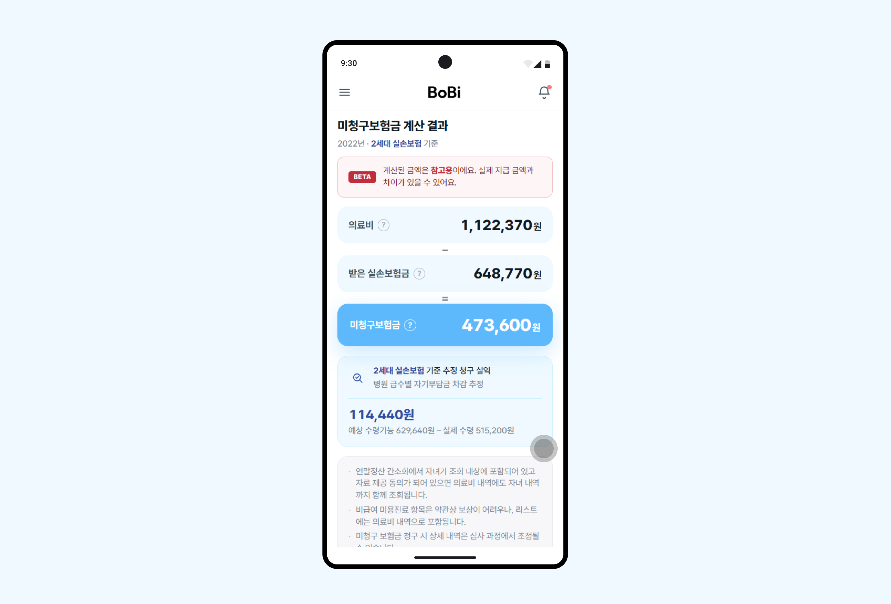

Bobi, Your Insurance Assistant
BOBI is a report service for insurance agents that analyzes up to five years of a customer’s medical records to support more effective insurance consultations.
Insurance agents need to quickly identify medical history that may affect coverage eligibility during consultations. To support this, I restructured the information architecture and prioritized key medical history related to mandatory disclosures, making critical information easier to find and review.

Driving AI Adoption Across the Entire Workflow
Starting with the BOBI project, I proposed company-wide AI adoption and drove its implementation across design and development. I established a workflow that enabled rapid prototyping and more efficient version and update management after release.
This reduced repetitive deliverables and allowed the team to focus more on improving user experience and product quality.


What Did User Testing Help Us Validate and Improve?
I tested the first BOBI prototype in real insurance consultations and refined the report based on feedback. I moved medical history for underwriting to the top of the report, helping insurance agents quickly find key information during consultations.
I also tested a workflow that allowed agents to file insurance claims on behalf of customers, validating remote consent and electronic signatures. After confirming the workflow was viable for real-world use, I moved the feature into production.


Less Documentation. Clearer Communication.
After adopting this workflow, I reduced design documentation and deliverables by more than 70%.
Instead of explaining flows and interactions through documentation, I used working prototypes to communicate the intended user experience directly. This reduced documentation work and accelerated execution, while also narrowing the communication gap between design and development.

